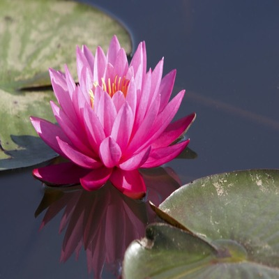

Lotus
Lotus is the Latin name for a genus of the pea family (Fabaceae), containing about 100 species distributed in temperate regions of Europe, Asia, Africa, and North America.
It is represented in Great Britain, for example, by L. corniculatus, bird’s-foot trefoil, a low-growing ground cover with clusters of small bright yellow flowers that are often streaked with crimson.
In North America 20 or more species of Lotus occur and are called such common names as deervetch and deerclover. They are grazed by animals.
Nelumbonaceae, the lotus-lily family of the order Proteales, consisting of two species of attractive aquatic plants.
One of these species is the sacred lotus of the Orient and is found in tropical and subtropical Asia.
The other species is the American lotus, or water chinquapin , found in the eastern United States and southward to Colombia.
Some authorities consider the two species to constitute a separate order because of important botanical characteristics that suggest a different evolutionary origin from the other water lilies.
Unlike other water lilies, the plants of Nelumbonaceae have pores in the seed coat but lack latex-bearing tubes; there are also chromosomal differences.
The family is further characterized by circular, centrally stalked, slightly hairy leaves, up to about 60 cm across, that are funnel- or cup-shaped.
The leaves extend, in the Asian species, as much as 2 m above the water instead of floating on it. The large, attractive flowers also stand high above the water on strong, leafless stalks.
They may be up to 25 cm across and have a number of petals, which close at night. The flowers of the sacred lotus, which stand as much as 1.8 m above the water, are pink or rose-coloured and fragrant.